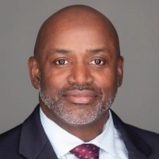

We're Building For Better Futures
In our relentless pursuit of progress, we are dedicated to constructing a future where innovation, sustainability, and inclusivity converge seamlessly.
Schedule Discovery Call
-
Enterprise Risk & Revenue Protection
Executive‑ready visibility into what’s threatening revenue — and a prioritized path of action.
-
Critical Account Recovery & Retention
Structured recovery that stabilizes strategic accounts through renewal — before the conversation is lost.
-
Portfolio & Program Operating Model Design
Governance, prioritization, and reporting structures executives actually use — without heroics.
-
23 Years
Executive Escalation & Transformation Leadership
Senior leadership that stabilizes high‑pressure situations, aligns stakeholders, and drives decisive execution.
Work With Sentinel

Operator‑Level Execution, Not Just Advisory
Most firms deliver a recommendation and walk away. Sentinel stays long enough to drive the change. We embed with your leaders, stabilize critical situations, and build the operating clarity your teams need to execute with confidence.
Our approach blends Fortune‑500 judgment with hands‑on leadership — ensuring every engagement ends with measurable outcomes, aligned stakeholders, and a repeatable operating rhythm your organization can sustain without us.
Schedule a Call
Built for Moments Where Outcomes Matter
Sentinel Advisory Group was founded on a simple thesis: mid‑market leaders facing high‑stakes operational moments deserve access to the same caliber of judgment, clarity, and execution that Fortune 500 executives rely on. When revenue is exposed, critical accounts slip, or transformations stall, leaders need support shaped for pressure — not generic consulting.
$535M+ Healthcare portfolios built and enterprise revenue protected across two decades of operating leadership
4 Verticals - SaaS, Healthcare, Financial Services, Manufacturing
We deliver Fortune 500-grade judgment with operator-level understanding, at fees mid-market leaders can actually justify.

Ready to Strengthen Your Organization?
If you're navigating a high‑stakes moment — a critical account,
a stalled transformation,
or
exposed revenue —
Sentinel brings
the senior‑level clarity and operator‑grade execution needed to
move
decisively.